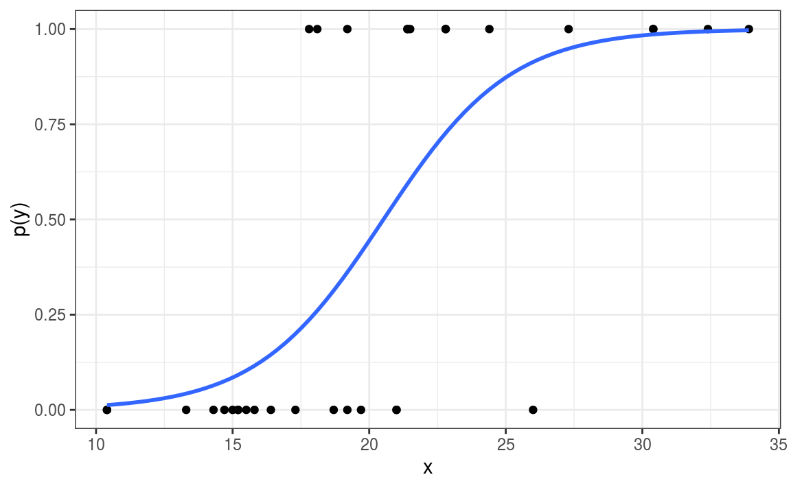
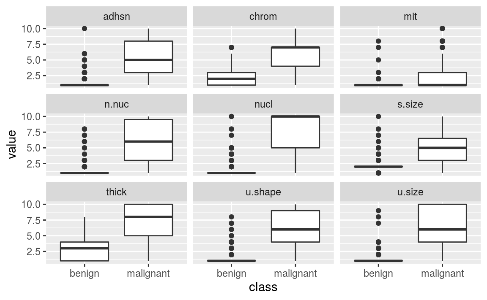
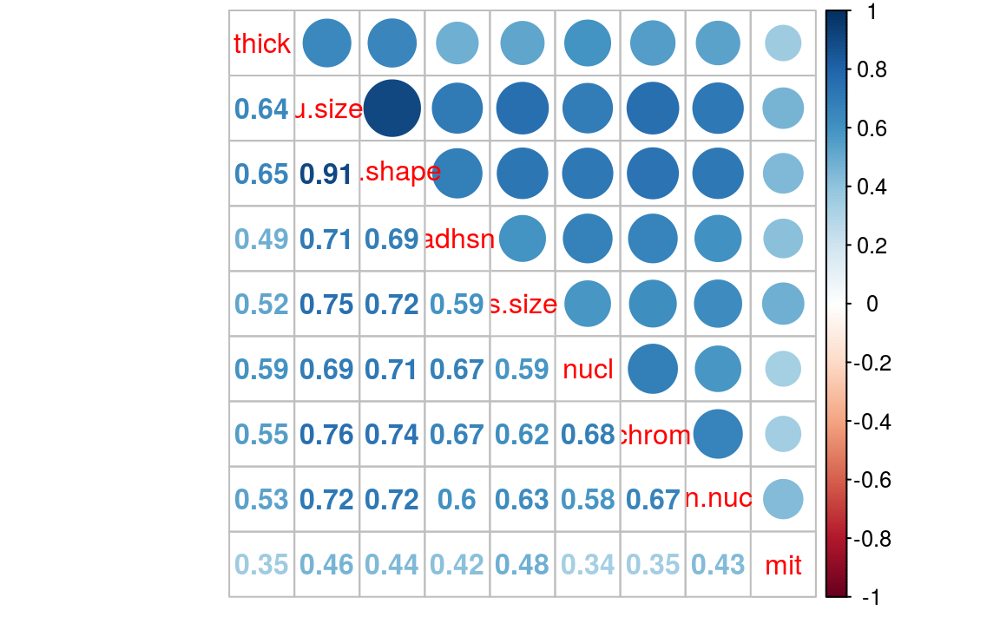
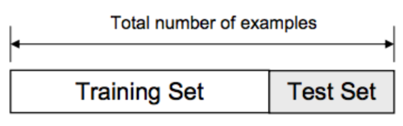
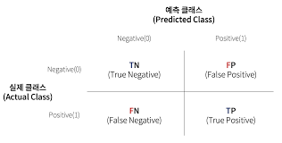
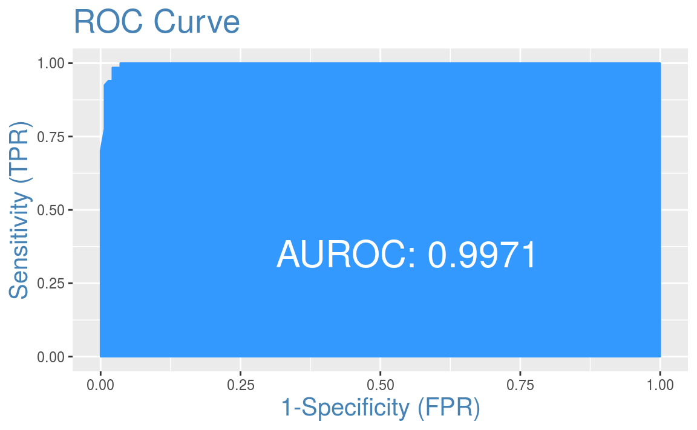

Chapter 3 로지스틱 회귀
3.1 오즈비
오즈는 성공할 확률이 실패할 확률의 몇 배인지를 나타내는 것으로써, \(Probability(Y) / 1 - (Probability(Y))\) 공식을 통해 계산됩니다. 예를 들어, 브라질이 월드컵 경기에서 이길 확률이 20%라면, 오즈는 \(0.2 / (1-0.2) = 0.25\)가 되고, 1대 4의 승산입니다. 오즈를 확률로 역변환하려면 오즈를 \(1 + (오즈)\)로 나누며, 앞의 예에서는 \(0.25 / (1+0.25) = 0.2\), 즉 20%가 됩니다.
만일 독일이 우승할 오즈가 0.18, 브라질이 우승할 오즈가 0.25인 경우 둘 간의 오즈를 오즈비를 이용해 비교할 수 있습니다. 브라질이 독일 대비 월드컵에서 우승할 확률은 0.25 / 0.18 = 1.39 입니다.
3.2 로지스틱 회귀
결과가 이항 혹은 다항 범주일 경우, 관찰값이 출력 변수의 특정 범주에 속할 확률을 예측해야 합니다. 이를 위해 기존 OLS 선형 회귀를 사용할 경우 매우 큰 측정 오차가 생길 수 있으며 편향된 결과를 낳습니다.
분류 문제는 0과 1 사이의 값을 갖는 확률로 가장 잘 모형화할 수 있습니다. 로지스틱 회귀와 선형 회귀의 관계는 로지스틱 회귀의 종속 변수를 로그 오즈, 즉 \(log(P(Y) / 1-P(Y))\)로 표현하고 이 값이 \(a + bX\)와 같음을 밝힘으로써 보일 수 있습니다. 이를 정리하면 다음과 같습니다.
\[log(\frac{P(Y)}{1-P(Y)}) = a + bX\] \[\frac{P(Y)}{1-P(Y)} = e^{a + bX}\] \[ P(Y) = \frac{e^{a + bX}}{1 + e^{a + bX}} \]
위 \(P(Y)\) 를 그래프로 나타내면 다음과 같다.

즉 \(x\)에 따른 \(y\)의 확률이 0과 1 사이에 놓이게 됩니다.
3.3 입학 데이터 분석
GRE, GPA, RANK가 입학(admission)에 어떤 영향을 주는지 로지스틱 회귀분석을 통해 분석하도록 하겠습니다.
## admit gre gpa rank
## 1 0 380 3.61 3
## 2 1 660 3.67 3
## 3 1 800 4.00 1
## 4 1 640 3.19 4
## 5 0 520 2.93 4
## 6 1 760 3.00 2glm() 함수를 이용하여 로지스틱 회귀분석을 실시합니다.
##
## Call:
## glm(formula = admit ~ ., family = binomial, data = admission)
##
## Deviance Residuals:
## Min 1Q Median 3Q Max
## -1.580 -0.885 -0.638 1.157 2.173
##
## Coefficients:
## Estimate Std. Error z value Pr(>|z|)
## (Intercept) -3.44955 1.13285 -3.05 0.0023 **
## gre 0.00229 0.00109 2.10 0.0356 *
## gpa 0.77701 0.32748 2.37 0.0177 *
## rank -0.56003 0.12714 -4.40 0.000011 ***
## ---
## Signif. codes: 0 '***' 0.001 '**' 0.01 '*' 0.05 '.' 0.1 ' ' 1
##
## (Dispersion parameter for binomial family taken to be 1)
##
## Null deviance: 499.98 on 399 degrees of freedom
## Residual deviance: 459.44 on 396 degrees of freedom
## AIC: 467.4
##
## Number of Fisher Scoring iterations: 4모든 변수가 유의미한 결과를 보입니다. 로지스틱 회귀에서는 OLS와는 다르게 피처의 계수를 \(X\)가 한 단위 변화할 때 \(Y\)가 변화하는 양을 나타낸다고 해석할 수 없습니다. 로그 함수에서 \(\beta\)라는 계수는 오즈비 \(e^\beta\)로 변환해 해석해야 합니다.
## (Intercept) gre gpa rank
## 0.03176 1.00230 2.17497 0.57119오즈비는 피처가 한 단위 변했을 때 나타나는 결과의 오지로 해석할 수 있습니다. 만일 이 값이 1보다 크면 피처가 증가할 때 결과의 오즈도 증가하며, 1보다 작으면 피처가 증가할 때 결과의 오즈는 감소합니다.
위의 예에서 gre와 gpa는 로그 오즈를 증가시키지만, rank는 로그 오즈를 감소시킵니다.
회귀분석 결과의 fitted.values에는 확률이 저장되어 있으며, 해당 값이 0.5보다 크면 1, 그렇지 않으면 0로 변환해줍니다. 이를 실제 데이터와 비교해보도록 합니다.
##
## ad.probs 0 1
## 0 253 98
## 1 20 29##
## ad.probs 0 1
## 0 0.6325 0.2450
## 1 0.0500 0.0725맞게 판단할 확률이 대략 70% 입니다.
3.4 위스콘신 유방암 데이터
위스콘신 유방암 데이터를 통해 종양이 양성 혹은 악성인지에 대해 예측해보도록 하겠습니다. 해당 데이터는 MASS 패키지의 biopsy 이름으로 저장되어 있습니다.
3.4.1 데이터 불러오기 및 편집
## 'data.frame': 699 obs. of 11 variables:
## $ ID : chr "1000025" "1002945" "1015425" "1016277" ...
## $ V1 : int 5 5 3 6 4 8 1 2 2 4 ...
## $ V2 : int 1 4 1 8 1 10 1 1 1 2 ...
## $ V3 : int 1 4 1 8 1 10 1 2 1 1 ...
## $ V4 : int 1 5 1 1 3 8 1 1 1 1 ...
## $ V5 : int 2 7 2 3 2 7 2 2 2 2 ...
## $ V6 : int 1 10 2 4 1 10 10 1 1 1 ...
## $ V7 : int 3 3 3 3 3 9 3 3 1 2 ...
## $ V8 : int 1 2 1 7 1 7 1 1 1 1 ...
## $ V9 : int 1 1 1 1 1 1 1 1 5 1 ...
## $ class: Factor w/ 2 levels "benign","malignant": 1 1 1 1 1 2 1 1 1 1 ...각 피처는 다음과 같습니다.
- ID: 표본의 코드 번호
- V1: 두께
- V2: 세포 크기의 균일성
- V3: 세포 모양의 균일성
- V4: 한계 부착력
- V5: 단일 상피세포 크기
- V6: 나핵(16개의 관찰값 결측)
- V7: 특징 없는 염색질
- V8: 정상 핵소체
- V9: 분열
- class: 종양의 진단의 결과, 양성 또는 악성. 우리가 예측하려는 결과
피처명이 입력되어 있지 않으므로, 이를 입력해주도록 합니다.
biopsy$ID = NULL
names(biopsy) = c('thick', 'u.size', 'u.shape', 'adhsn', 's.size',
'nucl', 'chrom', 'n.nuc', 'mit', 'class')
head(biopsy)## thick u.size u.shape adhsn s.size nucl chrom n.nuc mit class
## 1 5 1 1 1 2 1 3 1 1 benign
## 2 5 4 4 5 7 10 3 2 1 benign
## 3 3 1 1 1 2 2 3 1 1 benign
## 4 6 8 8 1 3 4 3 7 1 benign
## 5 4 1 1 3 2 1 3 1 1 benign
## 6 8 10 10 8 7 10 9 7 1 malignant다음으로 결측 관측치를 삭제 및 데이터를 변형해줍니다.
## [1] 16## y
## 0 1
## 444 239총 16개의 na 데이터가 존재하며, na.omit() 함수를 통해 해당 데이터를 모두 지워주도록 합니다. 또한 예측변수 y에는 class가 malignant(악성)일 경우 1, 그렇지 않을 경우 0을 입력합니다.
gather() 함수를 통해 테이블을 변경한 후, ggplot() 함수를 통해 각 class 별 피처들의 분포를 살펴보도록 합니다.
library(ggplot2)
library(dplyr)
library(tidyr)
library(magrittr)
biop.m = biopsy.v2 %>%
gather(key, value, -class)
biop.m %>%
ggplot(aes(x = class, y = value)) +
geom_boxplot() +
facet_wrap( ~ key)
다중공선성 확인을 위해 상관관계를 검사하도록 합니다.

u.size와 u.shape 간 상관관계가 0.91로 다중공선성 문제가 두드러져 보입니다.
3.4.2 데이터 나누기
기존에는 모든 데이터를 이용하여 모델을 훈련시켰습니다. 그러나 모델의 예측력을 평가하기 위해서는 모델링에 사용되지 않은 데이터와 평가하야 합니다. 이를 위해 트레이닝 및 테스트 세트로 나누도록 합니다. 일반적으로 트레이닝과 테스트 셋의 비율은 7:3 혹은 8:2로 합니다.

set.seed(123)
ind = sample(2, nrow(biopsy.v2), replace = TRUE,
prob = c(0.7, 0.3))
train = biopsy.v2[ind==1, ]
test = biopsy.v2[ind==2, ]##
## benign malignant
## 0.6371 0.3629##
## benign malignant
## 0.6794 0.3206sample() 을 통해 무작위 숫자를 7:3 비율로 생성한 후, train과 test 셋으로 나눠주도록 합니다. 그 후 각 데이터 셋의 종속변수의 비율을 확인해 7:3 비율과 비슷한지 확인합니다.
3.4.3 모형화
먼저 모든 입력 변수로 로지스틱 모형을 만든 후 점차 줄여 나가며 최량 부분 집합을 생성하도록 합니다.
##
## Call:
## glm(formula = class ~ ., family = binomial, data = train)
##
## Deviance Residuals:
## Min 1Q Median 3Q Max
## -3.340 -0.139 -0.072 0.032 2.356
##
## Coefficients:
## Estimate Std. Error z value Pr(>|z|)
## (Intercept) -9.429 1.227 -7.68 1.6e-14 ***
## thick 0.525 0.160 3.28 0.00104 **
## u.size -0.105 0.245 -0.43 0.66917
## u.shape 0.280 0.253 1.11 0.26804
## adhsn 0.309 0.174 1.78 0.07572 .
## s.size 0.287 0.207 1.38 0.16702
## nucl 0.406 0.121 3.34 0.00083 ***
## chrom 0.274 0.217 1.26 0.20801
## n.nuc 0.224 0.137 1.63 0.10213
## mit 0.430 0.339 1.27 0.20540
## ---
## Signif. codes: 0 '***' 0.001 '**' 0.01 '*' 0.05 '.' 0.1 ' ' 1
##
## (Dispersion parameter for binomial family taken to be 1)
##
## Null deviance: 620.989 on 473 degrees of freedom
## Residual deviance: 78.373 on 464 degrees of freedom
## AIC: 98.37
##
## Number of Fisher Scoring iterations: 8## (Intercept) thick u.size u.shape adhsn s.size
## 0.0001 1.6909 0.9007 1.3228 1.3615 1.3319
## nucl chrom n.nuc mit
## 1.5003 1.3148 1.2516 1.5367위 예제에서 u.size를 제외한 모든 피처가 로그 오즈를 증가시킵니다. 다음으로 다중공선성을 확인합니다.
## thick u.size u.shape adhsn s.size nucl chrom n.nuc mit
## 1.235 3.249 2.830 1.302 1.636 1.373 1.523 1.343 1.060위의 값들 중 어느 것도 통계값이 5보다 크지 않으므로 공선성을 크게 문제가 되지 안습니다.
## 1 3 6 7 9 10
## 0.02053 0.01088 0.99993 0.08987 0.01379 0.00842확률을 선택한 후, 해당 값이 0.5보다 클 경우 1, 아닐 경우 0으로 구분합니다. 그 후 train 데이터의 class와 비교하여 예측 정확도를 비교해보도록 한다.
train.bi = ifelse(train.probs > 0.5, 1, 0) %>% as.factor()
train.class = ifelse(train$class == 'malignant', 1, 0) %>% as.factor()
true.ratio = prop.table(table(train.bi, train.class))
print(true.ratio[1,1] + true.ratio[2,2])## [1] 0.9684예측 정확도가 0.6203, 0.0169, 0.0148, 0.3481로 매우 높게 나타납니다.
3.4.3.1 혼돈 행렬(Confusion Matrix) 이해하기
혼돈 행렬은 예측 값이 실제 값과 일치하는지에 따라 여측을 범주화한 표입니다. 한 차원은 예측 값을 나타내고, 다른 차원은 실제값을 나타냅니다.
일반적으로 관심 있는 클래스를 positive 클래스, 다른 클래스들을 false 클래스라고 하며, 두 클래스의 관계는 네 종류의 범주 중 예측이 속하는 범주를 도표화한 2 X 2 혼동 행렬로 표현할 수 있습니다.

각 항목의 설명은 다음과 같습니다.
- True Positive: 관심 클래스로 정확하게 분류
- True Negative: 관심 클래스가 아닌 클래스로 정확하게 분류
- False Positive: 관심 클래스로 부정확학 분류
- False Negative: 관심 클래스가 아닌 클래스로 부정확하게 분류
혼돈 행렬을 이용한 성능 측정에는 다음과 같은 값들이 있습니다.
정확도(Accuracy): \(\frac{TP + TN}{TP + TN + FP + FN}\), True Positive과 True Negative의 횟수를 전체 예측 횟수로 나눈 값
오류율(Error rate): \(\frac{FP + FN}{TP + TN + FP + FN} = 1 - 정확도\), 부정확한 분류된 예시
재현율(Recall): \(\frac{TP}{TP + FN}\), True Postiive 개수를 전체 긍정 개수로 나누어 계산. 민감도(Sensitivity)로도 불림
특이도(Specificity, 참 부정률): \(\frac{TN}{TN + FP}\), True Negative의 개수를 전체 부정으로 나누어 계산
정밀도(Precision, 긍정 예측 값): \(\frac{TP}{TP + FP}\), 모델이 Positive로 예측할 때 예측이 얼마나 정확한지 여부
F 점수(F-score): \(\frac{2 \times 정밀도 \times 재현율}{재현율 + 정밀도} = \frac{2 \times TP}{2 \times TP + FP+ FN}\), 조화 평균을 이용하여 정밀도와 재현율을 결합
혼돈 행렬은 caret 패키지의 confusionMatrix(predict, truth) 함수를 이용해 계산할 수 있습니다.
## Confusion Matrix and Statistics
##
## Reference
## Prediction 0 1
## 0 294 7
## 1 8 165
##
## Accuracy : 0.968
## 95% CI : (0.948, 0.982)
## No Information Rate : 0.637
## P-Value [Acc > NIR] : <2e-16
##
## Kappa : 0.932
##
## Mcnemar's Test P-Value : 1
##
## Sensitivity : 0.974
## Specificity : 0.959
## Pos Pred Value : 0.977
## Neg Pred Value : 0.954
## Prevalence : 0.637
## Detection Rate : 0.620
## Detection Prevalence : 0.635
## Balanced Accuracy : 0.966
##
## 'Positive' Class : 0
## 정확도를 의미하는 Accuracy가 0.9684로 직접 계산한 값과 동일합니다.
3.4.4 테스트 셋에 적용
위 모형은 트레이닝 셋을 대상으로 만들어졌습니다. 따라서 모형에 포함되지 않은 데이터인 테스트 셋의 데이터를 대상으로 모델의 정확도를 구해보도록 합니다.
test.probs = predict(full.fit, newdata = test, type = 'response')
test.bi = ifelse(test.probs > 0.5, 1, 0) %>% as.factor()
test.class = ifelse(test$class == 'malignant', 1, 0) %>% as.factor()
caret::confusionMatrix(test.bi, test.class)## Confusion Matrix and Statistics
##
## Reference
## Prediction 0 1
## 0 139 2
## 1 3 65
##
## Accuracy : 0.976
## 95% CI : (0.945, 0.992)
## No Information Rate : 0.679
## P-Value [Acc > NIR] : <2e-16
##
## Kappa : 0.945
##
## Mcnemar's Test P-Value : 1
##
## Sensitivity : 0.979
## Specificity : 0.970
## Pos Pred Value : 0.986
## Neg Pred Value : 0.956
## Prevalence : 0.679
## Detection Rate : 0.665
## Detection Prevalence : 0.675
## Balanced Accuracy : 0.975
##
## 'Positive' Class : 0
## predict() 함수의 newdata 인자에 test를 입력하여 확률을 계산한 후, 혼돈 행렬을 구하도록 합니다. 정확도가 0.9761로써 역시나 뛰어난 성과를 보입니다.
3.5 교차검증을 포함한 로지스틱 회귀
K-폴드 교차검증은 데이터 세트를 같은 크기를 갖는 조각으로 K등분한 후, K-세트 중에 1개의 세트를 번갈아 제외하며 학습합니다.

bestglm 패키지를 이용하여 교차 검증을 이용한 로지스틱 회귀분석을 실행할 수 있습니다. 해당 패키지를 이용하기 위해서 결과값을 0과 1로 코드화할 필요가 있으며, 만일 변수형이 팩터 형태로 남아 있으면 작동이 되지 않습니다. 또한 결과값인 \(y\)가 맨 마지막 컬럼에 위치해야 하며, 불필요한 컬럼은 삭제되어야 합니다.
이를 고려하여 새로운 데이터 테이블을 만들고, 교차 검증을 실시합니다.
library(bestglm)
df = train %>%
mutate(class = ifelse(class == 'malignant', 1, 0))
bestglm(df, IC = 'CV',
CVArgs = list(Method = 'HTF', K = 10,
REP = 1), family = binomial)## CV(K = 10, REP = 1)
## BICq equivalent for q in (0.0000716797006619085, 0.273173435514231)
## Best Model:
## Estimate Std. Error z value Pr(>|z|)
## (Intercept) -7.8147 0.90996 -8.588 8.855e-18
## thick 0.6188 0.14713 4.206 2.598e-05
## u.size 0.6582 0.15295 4.303 1.683e-05
## nucl 0.5726 0.09923 5.771 7.899e-09K = 10 개를 대상으로 교차 검증을 수행한 결과 최적의 변수가 선택되었습니다. 해당 변수만을 이용하여 다시 로지스틱 회귀분석을 실시합니다.
reduce.fit = glm(class ~ thick + u.size + nucl, family = binomial,
data = train)
summary(reduce.fit)##
## Call:
## glm(formula = class ~ thick + u.size + nucl, family = binomial,
## data = train)
##
## Deviance Residuals:
## Min 1Q Median 3Q Max
## -3.579 -0.181 -0.072 0.042 2.373
##
## Coefficients:
## Estimate Std. Error z value Pr(>|z|)
## (Intercept) -7.8147 0.9100 -8.59 < 2e-16 ***
## thick 0.6188 0.1471 4.21 0.0000259816 ***
## u.size 0.6582 0.1530 4.30 0.0000168303 ***
## nucl 0.5726 0.0992 5.77 0.0000000079 ***
## ---
## Signif. codes: 0 '***' 0.001 '**' 0.01 '*' 0.05 '.' 0.1 ' ' 1
##
## (Dispersion parameter for binomial family taken to be 1)
##
## Null deviance: 620.989 on 473 degrees of freedom
## Residual deviance: 97.665 on 470 degrees of freedom
## AIC: 105.7
##
## Number of Fisher Scoring iterations: 7위 모델을 테스트 셋에 적용한 후, 혼돈 행렬을 이용해 측값과 실제 값을 비교해보도록 합니다.
library(caret)
test.cv.probs = predict(reduce.fit, newdata = test, type = 'response')
test.cv.probs = ifelse(test.cv.probs > 0.5, 1, 0) %>% as.factor()
test.class = ifelse(test$class == 'malignant', 1, 0) %>% as.factor()
caret::confusionMatrix(test.cv.probs, test.class)## Confusion Matrix and Statistics
##
## Reference
## Prediction 0 1
## 0 139 5
## 1 3 62
##
## Accuracy : 0.962
## 95% CI : (0.926, 0.983)
## No Information Rate : 0.679
## P-Value [Acc > NIR] : <2e-16
##
## Kappa : 0.911
##
## Mcnemar's Test P-Value : 0.724
##
## Sensitivity : 0.979
## Specificity : 0.925
## Pos Pred Value : 0.965
## Neg Pred Value : 0.954
## Prevalence : 0.679
## Detection Rate : 0.665
## Detection Prevalence : 0.689
## Balanced Accuracy : 0.952
##
## 'Positive' Class : 0
## 모든 피처를 포함하는 모형에 비하면 정확도가 다소 떨어졌습니다.
3.6 BIC 기준 최적의 피처 선택
bestglm() 함수의 IC 인자를 변경하여 타 기준 최적 피처를 선택할 수 있으며, BIC 기준 최적의 피처를 선택하도로 하겠습니다.
## BIC
## BICq equivalent for q in (0.273173435514231, 0.577036596263764)
## Best Model:
## Estimate Std. Error z value Pr(>|z|)
## (Intercept) -8.6170 1.03155 -8.353 6.633e-17
## thick 0.7114 0.14752 4.822 1.419e-06
## adhsn 0.4538 0.15034 3.018 2.541e-03
## nucl 0.5580 0.09848 5.666 1.462e-08
## n.nuc 0.4291 0.11846 3.622 2.920e-04이번에는 thick, adhsn, nucl, n.nuc 피처가 선택되었다. 이를 토대로 추정 및 정확도를 계산해봅니다.
bic.fit = glm(class ~ thick + adhsn + nucl + n.nuc, family = binomial,
data = train)
test.bic.probs = predict(bic.fit, newdata = test, type = 'response')
test.bic.probs = ifelse(test.bic.probs > 0.5, 1, 0) %>% as.factor()
caret::confusionMatrix(test.bic.probs, test.class)## Confusion Matrix and Statistics
##
## Reference
## Prediction 0 1
## 0 138 1
## 1 4 66
##
## Accuracy : 0.976
## 95% CI : (0.945, 0.992)
## No Information Rate : 0.679
## P-Value [Acc > NIR] : <2e-16
##
## Kappa : 0.946
##
## Mcnemar's Test P-Value : 0.371
##
## Sensitivity : 0.972
## Specificity : 0.985
## Pos Pred Value : 0.993
## Neg Pred Value : 0.943
## Prevalence : 0.679
## Detection Rate : 0.660
## Detection Prevalence : 0.665
## Balanced Accuracy : 0.978
##
## 'Positive' Class : 0
## 정확도가 0.9761으로 소폭 개선되었습니다.
3.7 ROC
분류 모형을 선택할 때는 ROC(Receiver Operating Characteristic) 차트를 주로 이용합니다.
ROC 곡선은 거짓 긍정을 피하면서 참 긍정을 팀자하는 것 사이의 트레이드오프를 관찰하는데 사용되며, \(y\)축은 참 긍정율(TPR: True Positive Rate), \(x\)축은 거짓 긍정율(FPR: False Positive Rate)을 나타냅니다.
\[TPR = 긍정이라고\ 제대로\ 분류된 갯수 /\ 전체\ 긍정\ 갯수\] \[FPR = 긍정이라고\ 잘못\ 분류된\ 부정\ 갯수 /\ 전체\ 부정\ 갯수\] ROC 곡선을 구성하는 점들은 거짓 긍정의 임계치가 변화할 때 참 긍정률을 나타냅니다. 곡선을 생성하기 위해 분류기의 예측을 긍정 클래스의 추정 확률로 내림차순 정렬합니다. 원점에서 시작해 참 긍정률과 거짓 긍정률에 미치는 영향은 수직 또는 수평으로 추적하는 곡선을 만듭니다.

다이어그램의 왼쪽 하단 모서리에서 오른쪽 상단의 모서리까지 대각선은 예측 값이 없는 분류기를 나타냅니다 이 분류기는 참 긍정과 거짓 긍정이 정확히 같은 비율로 탐지되는데, 분류기가 이 둘을 구별하지 못한다는 것을 의미하며, 다른 분류기를 판단하기 위한 기준선입니다. 이 선에 가까운 ROC 곡선은 그다지 유용하지 않은 모델을 나타냅니다.
분류기가 완벽하다면 True Positive는 100%, False Positive는 0%인 y축과 같을 것입니다. 실제 분류기는 위 그림처럼 ‘완벽한’ 분류기와 ‘쓸모없는’ 분류기 사이의 영역에 위치할 것입니다.
ROC 곡선이 완벽한 분류기에 가까울수록 분류기는 Positive 값을 더욱 잘 식별하며, 이는 AUC (Area Under Curve)로 측정할 수 있습니다. AUC는 ROC 다이어그램을 2차원 정사각형으로 취급하며, ROC 곡선의 아래 전체 영역을 측정합니다. AUC는 0.5에서 1 사이 값을 나타냅니다.
다음은 모형의 ROC 및 AUC를 계산하는 방법입니다.
full.fit = glm(class ~., family = binomial, data = train)
test.full.props = predict(full.fit, newdata = test, type = 'response')
head(test.full.props)## 2 4 5 8 11 16
## 0.960970 0.676287 0.022461 0.005702 0.001921 0.743727먼저 모든 피처로 로지스틱 회귀 분석을 실시한 후, predict() 함수를 이용해 테스트 셋에 모델을 적용합니다.

InformationValue 패키지의 plotROC() 함수를 이용해 ROC 그림 및 AUC 값을 계산할 수 있습니다.